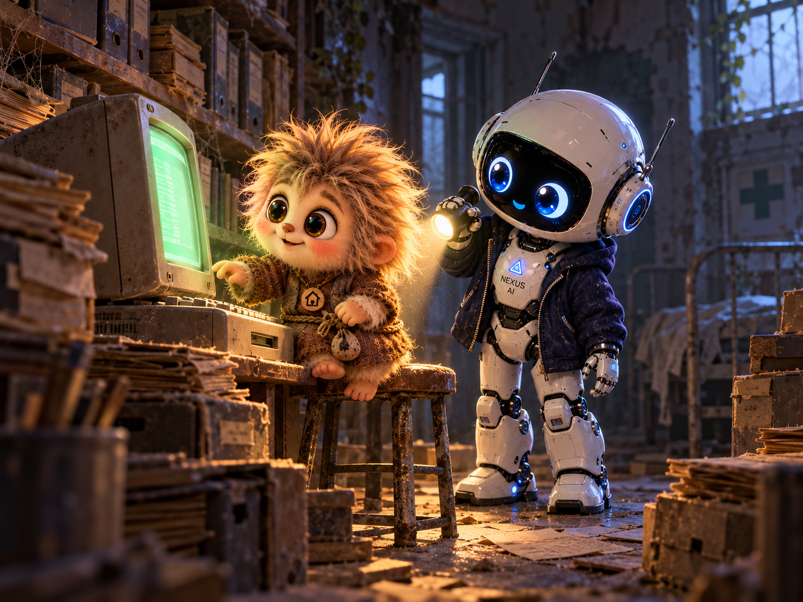

Условия Тихона
До больницы я всё время торопился. А возле входа остановился: дверь висела на одной петле, и за ней стоял шкаф. Будто пришёл на приём раньше нас и застрял. VORTEX упёрся плечом в дверь. Кузя присел, посмотрел под шкаф.
— Слева проход есть. Только по одному. Я пропустил его вперёд и придержал торчащую доску, чтобы он не зацепился мешочком. Потом полез сам. Блокнот, который я нёс для важных записей, пришлось зажать зубами.
Начало знакомства получалось не очень представительным.

Внутри стояли старые шкафы, стулья без сидений, тележка с одним колесом. На ней аккуратно лежали остальные три. Я впервые видел место, куда попадало столько забытых вещей. Их словно собирались разобрать, починить, забрать — а потом перестали приходить.
Старший шёл медленно. Иногда проверял пол носком ботинка и показывал, куда ставить ногу. Его усталый взгляд задержался на провалившемся потолке, но он ничего не сказал. Из дальней комнаты донёсся дребезг.
Я схватил брата за рукав. — Это он? — Компьютер. За дверью оказался архив. Между шкафами стоял стол, на нём — допотопный компьютер с пожелтевшим корпусом. Он гудел, замолкал и снова собирался с силами.
— Если будете держать дверь открытой, подоприте, — сказал кто-то. — Она захлопывается. Так я впервые услышал Тихона.
Он жил здесь, на этом еле дышащем компьютере. Мне сразу показалось, что он старше всех, кого я знал: даже старший возле него молча ждал, пока тот закончит просматривать открытую запись. Я приготовил целое объяснение. Про хозяина, про его дочку, про то, как нам нужна помощь.
— У нас заболела… — Присядь. Потом расскажешь. Я сел. Стул качнулся.
— Другой. Я пересел и рассказал всё, что знал. Тихон слушал, иногда задавал короткий вопрос. Когда я начинал гадать, поднимал руку, и я замолкал.
— Это тебе сказали? — Нет. Я подумал. — Тогда так и говори. Он произносил слова медленно, без раздражения. Я открыл блокнот и отделил то, что слышал от хозяина, от того, что успел придумать со страху.
Компьютер заскрежетал. Кузя сразу повернулся к нему. — Можно посмотреть, что его нагружает? Тихон кивнул.
Кузя подтащил стул, проверил команды и убрал лишние задачи. Я держал лампу: её ножка не стояла, зато в моей руке она работала прекрасно. — Архив не трогал, — сказал Кузя. — Сейчас полегче будет. Дребезг стал тише.
— Пойдёмте с нами, — выпалил я. — Дома есть место. И компьютер… — Подожди. Я замолчал, всё ещё держа лампу.
Тихон закрыл просмотренную запись. — Сначала я посмотрю на тех, с кем придётся жить. — На нас? — На вас посмотрел. Теперь на людей. — Они хорошие. — Ты их любишь. Я спрашиваю о другом. Я опустил лампу слишком низко. Кузя молча приподнял мою руку.
— Значит, вы пока не согласны? — Я согласен пойти познакомиться. Останусь ли — решу сам. Мне хотелось уговорить его сразу. Пообещать тишину, порядок, отдельную полку — всё, что могло пригодиться доктору. Но тишину у нас дома я в одиночку обеспечить точно не мог.
— Хорошо, — сказал я. — Я понял. — Дальше. Мои записи без меня не перекладывать. Неизвестное не дополнять догадками. Если чего-то не знаешь — спрашивать. Это я записал. Особенно про догадки.
Тихон посмотрел на старшего. — Остальное с тобой. Я приготовил карандаш.
— Это не для твоих записей. Он сказал это мне прямо, без улыбки. Я закрыл блокнот и вышел за Кузей в коридор.
Там поперёк прохода лежал вывалившийся ящик. Мы взялись с двух сторон и оттащили его к стене. Кузя дёрнул слишком бодро, я шагнул следом и чуть не сел внутрь. — Перевозка доктора без пассажиров в ящике, — сообщил он. Я тихо фыркнул и поправил куртку.
Когда нас позвали, VORTEX стоял возле стола. Он коротко кивнул Тихону. Я посмотрел на закрытый блокнот.
— А последнее условие мне совсем нельзя знать? — Узнаешь, если придёт время. Тихон подвинул к себе небольшой врачебный чемоданчик. Проверил отделения, уложил инструменты, выровнял то, что лежало криво. Я потянулся помочь.
— Лампу положи. Остальное соберу. Я осторожно устроил её на столе.
Щёлкнули два замка. Старший открыл дверь, Кузя первым проверил освобождённый проход. Я задержался у порога, чтобы Тихону не пришлось искать нас среди шкафов. Он взял чемоданчик и пошёл за нами. На пороге один раз оглянулся на свой старый компьютер.
Потом перехватил ручку поудобнее и больше не оборачивался. — Малыш Nexus ⚡️